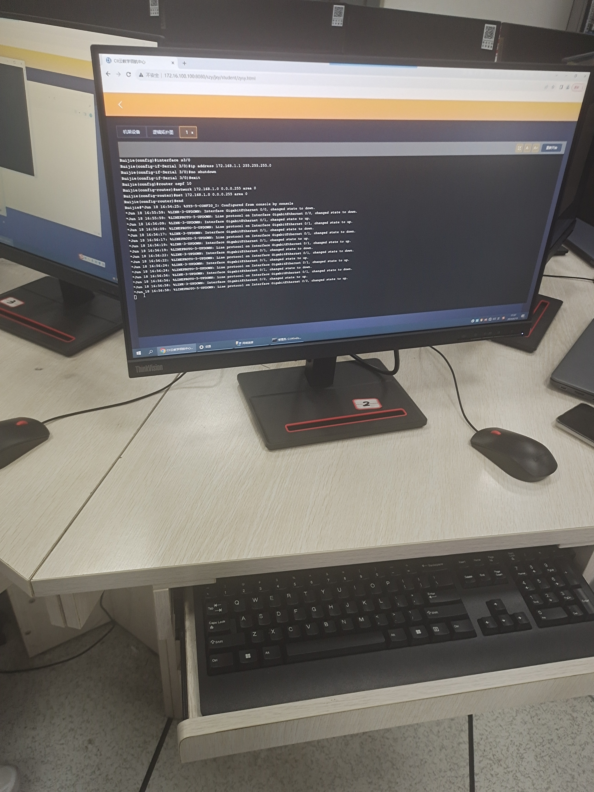
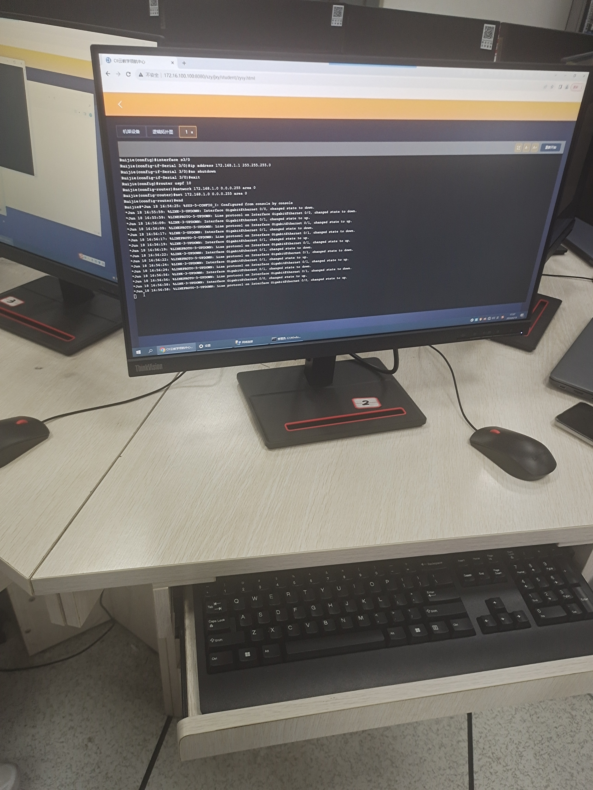
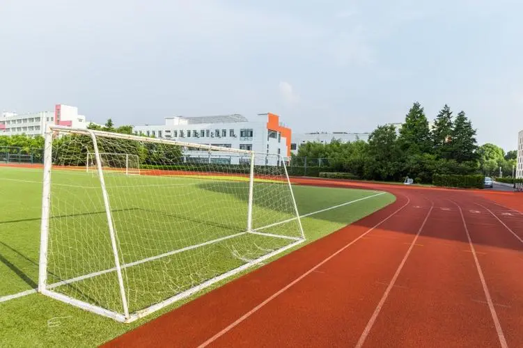
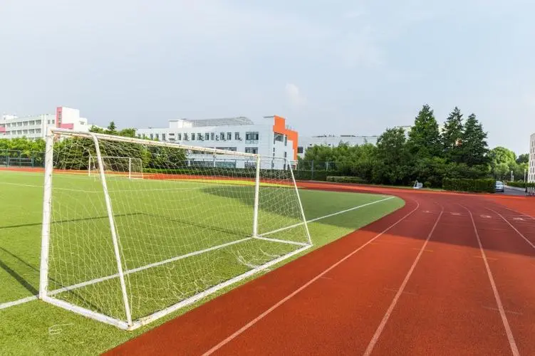

学习
在当今数字化的世界中，信息安全扮演着至关重要的角色。学习信息安全可以帮助我们保护个人隐私和机密信息，防止黑客入侵和数据泄露。
密码学作为信息安全的重要支柱，涉及加密解密技术，学习它可以让我们理解数据加密的原理和方法，从而设计出更加安全的通信系统。
网络工程是构建和维护网络基础设施的学科，涵盖了网络规划、设计、部署和管理等方面。通过学习网络工程，我们可以了解网络通信协议、路由器配置、网络安全等知识，为构建稳定高效的网络提供技术支持。

Web前端开发是构建网页前端界面的过程，涉及HTML、CSS和JavaScript等技术。学习Web前端开发可以让我们掌握网页设计和交互的技巧，提升用户体验，同时也需要关注网页性能优化和跨浏览器兼容性等方面。
密码学作为信息安全的重要支柱，涉及加密解密技术，学习它可以让我们理解数据加密的原理和方法，从而设计出更加安全的通信系统。
网络工程是构建和维护网络基础设施的学科，涵盖了网络规划、设计、部署和管理等方面。通过学习网络工程，我们可以了解网络通信协议、路由器配置、网络安全等知识，为构建稳定高效的网络提供技术支持。

Web前端开发是构建网页前端界面的过程，涉及HTML、CSS和JavaScript等技术。学习Web前端开发可以让我们掌握网页设计和交互的技巧，提升用户体验，同时也需要关注网页性能优化和跨浏览器兼容性等方面。
读书
阅读在生活中扮演着重要而不可替代的角色。它不仅是获取知识和信息的途径，更是一种提升自我、拓展思维、丰富心灵的方式。通过阅读，我们可以获得各种各样的见解、经验和智慧，拓展视野、提升素养，让自己变得更加全面和深刻。
阅读可以开阔我们的视野，让我们了解到更多的世界和人生。通过书中的文字，我们可以穿越时空，探索未知的领域，体验不同的文化和思维方式。阅读不仅是获取知识的途径，更是一种心灵的旅程，让我们在书中感受到无限的魅力和智慧。
除此之外，阅读还可以提升我们的思维能力和创造力。通过阅读不同类型的书籍，我们可以接触到各种各样的思想和观点，激发我们的思考，培养我们的逻辑思维能力和批判性思维能力。阅读还可以启发我们的创造力，让我们在思考和实践中不断突破自我，开拓创新的可能性。
阅读可以开阔我们的视野，让我们了解到更多的世界和人生。通过书中的文字，我们可以穿越时空，探索未知的领域，体验不同的文化和思维方式。阅读不仅是获取知识的途径，更是一种心灵的旅程，让我们在书中感受到无限的魅力和智慧。
除此之外，阅读还可以提升我们的思维能力和创造力。通过阅读不同类型的书籍，我们可以接触到各种各样的思想和观点，激发我们的思考，培养我们的逻辑思维能力和批判性思维能力。阅读还可以启发我们的创造力，让我们在思考和实践中不断突破自我，开拓创新的可能性。
运动
运动有助于释放身体内的内啡肽和多巴胺等化学物质，提升情绪，减轻压力和焦虑。
定期运动可以提高自尊心和自信心，改善睡眠质量，减少抑郁和情绪波动。

运动有助于提高注意力、记忆力和学习能力，改善大脑功能，降低患认知障碍症的风险。
定期运动可以提高自尊心和自信心，改善睡眠质量，减少抑郁和情绪波动。

运动有助于提高注意力、记忆力和学习能力，改善大脑功能，降低患认知障碍症的风险。